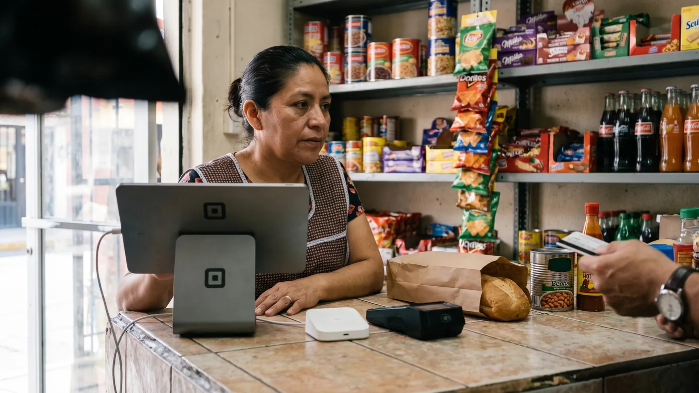

Clip, Mercado Pago o SumUp: qué terminal conviene a tu negocio en México
Preguntas "Clip o Mercado Pago" y te salen tres respuestas distintas en tres blogs distintos. Añade a SumUp, que acaba de llegar al país, y la decisión se complica más. La verdad es que las tres cobran parecido en una venta de contado, y donde de verdad se separan es en los meses sin intereses, en el precio real de la terminal y en qué pasa el día que no hay internet en tu local. Vamos con los números publicados por cada una, sin adivinar.

Por qué esta decisión pesa más de lo que parece
Una terminal de cobro parece una compra chica: un aparato, una app, listo. Pero la comisión que eliges hoy se cobra en cada venta que hagas de aquí en adelante, y si tu negocio vende con meses sin intereses, esa comisión puede comerse gran parte del margen sin que lo notes hasta que revisas el estado de cuenta.
Lecturas relacionadas: cuánto te cuesta de verdad tu TPV, punto de venta con CFDI y controlar el fiado.
El otro problema es que muchas comparativas en internet ya están viejas. Mencionan terminales que cambiaron de tarifa hace un año, o de plano una empresa que hoy no opera igual en México. Por eso esta guía se queda solo con lo que las propias empresas publican ahora mismo en su sitio oficial.
Las tres terminales que sí puedes usar hoy en México, de un vistazo
Antes del detalle, el mapa completo. Las tres cobran una tasa parecida al contado, y las tres regalan la terminal más barata como promoción de entrada.
| Terminal | Comisión de contado | Renta mensual | Terminal más barata |
|---|---|---|---|
| Clip | 2.99% + $1 + IVA (promo) | $0 | Descuentos variables, revisa la app |
| Mercado Pago Point | 3.5% + IVA | $0 | $99 (Point Mini, promo) |
| SumUp Go | 3.5% + IVA | $0 | $349 (promo, $2,999 precio regular) |
Clip: la más completa en modelos
Clip es la que más gente reconoce en México, y con razón: fue de las primeras en llevar el cobro con tarjeta al comercio pequeño sin pedirte una cuenta bancaria empresarial. Su sitio oficial, consultado en agosto de 2026, publica una comisión promocional de 2.99% más 1 peso, más IVA por venta aprobada, frente a una tarifa regular anterior de 3.6%. Sin renta mensual.
Su fuerza real está en el catálogo: Clip Plus, Clip Pro y Clip Total, con teclado e impresora integrada para un mostrador más formal, además del lector que se conecta al celular. Si tu negocio ya tiene un mostrador fijo y quieres una terminal que se sienta como caja registradora, Clip suele ser la opción más completa en variedad de aparatos.
El punto de cuidado son los meses sin intereses. Varios comparadores citan tarifas de MSI muy superiores a la tasa de contado, hasta rangos de doble dígito en plazos largos. Clip no publica esa tabla completa en su página principal, así que confírmala directamente en la app antes de ofrecer MSI a un cliente.
Mercado Pago Point: barata de entrada, cuidado con los MSI
Mercado Pago es el brazo financiero de Mercado Libre, y su línea Point es la terminal con el precio de entrada más bajo de las tres. Según su página oficial, consultada en agosto de 2026, el modelo Point Mini cuesta 99 pesos en promoción (precio regular 499), y la comisión estándar es de 3.5% más IVA, sin renta mensual.
Donde hay que abrir bien los ojos es en los meses sin intereses, porque ahí sí publican la tabla completa: 4.69% a 3 meses, 7.69% a 6 meses, 11.19% a 9 meses, 12.89% a 12 meses, 19.39% a 18 meses y 27.29% más IVA a 24 meses. Para un producto de margen ajustado, ofrecer 24 meses sin intereses puede dejarte con casi nada de ganancia en esa venta. Haz la cuenta con tu margen real antes de activar plazos largos.
SumUp: la recién llegada
SumUp aterrizó oficialmente en México el 21 de octubre de 2025, como su mercado número 37, según el anuncio de la propia empresa. Es la opción más nueva de las tres, y eso tiene su lado bueno y su lado a verificar.
Su terminal SumUp Go trae SIM integrada (no depende del wifi de tu celular), batería de larga duración y acepta contactless, chip y NIP, Google Pay y Apple Pay. Según su sitio oficial, la comisión es 3.5% más IVA sin renta mensual, y el aparato cuesta 349 pesos en promoción de lanzamiento frente a 2,999 de precio regular.
Lo que hay que verificar es lo que toda marca nueva en un país arrastra: soporte local, tiempos de depósito reales y qué tan rápido resuelven un reclamo. Al ser tan reciente en México, conviene pedir referencias de otros comercios antes de volverla tu única terminal.
¿Y Square? Por qué no está en esta comparación
Si buscaste "Square México" seguramente encontraste artículos de hace varios años hablando de un lanzamiento. La realidad de hoy es distinta: el propio centro de ayuda de Square, consultado en agosto de 2026, enumera los países donde acepta pagos con tarjeta: Estados Unidos, Canadá, Australia, Japón, Reino Unido, Irlanda, Francia y España. México no aparece en esa lista.
No es que Square "no sirva", es que su documentación oficial actual no incluye a México entre los países donde procesa pagos con tarjeta. Por honestidad con quien lee esto, la dejamos fuera de la comparación práctica y nos quedamos con las tres terminales que sí puedes contratar hoy en el país.
La terminal cobra, tu caja es otra cosa
Aquí está el punto que casi nadie te explica cuando compras una terminal: el aparato que cobra la tarjeta y el sistema que lleva tu inventario, tus ventas y tu fiado no tienen por qué ser el mismo software. Clip, Mercado Pago y SumUp empujan cada uno su propia app de caja junto con la terminal, y usarla te ata un poco a esa empresa: si mañana cambias de terminal por una comisión mejor, puedes perder el historial de ventas y tener que recapturar tu inventario desde cero.
Separar las dos decisiones (quién procesa el pago, y qué sistema registra la venta) te deja libre para cambiar de terminal sin reconstruir tu negocio. Aquí es donde entra digabloPos, no como una cuarta terminal, sino como el sistema de caja que funciona junto con cualquiera de las tres de arriba.
digabloPos
digabloPos es un sistema de caja en la nube, no una terminal de cobro. Trabaja con la Clip, la Point o la SumUp que ya tengas, cobras con el aparato que prefieras y digabloPos registra la venta, el inventario y el corte. Su plan base es gratuito para siempre: ventas ilimitadas, pagos en efectivo, tarjeta y mobile money, dos empleados, 30 días de historial, plan de sala, lotes con fecha de caducidad, impresión térmica e interfaz optimizada para celular.
Y funciona sin conexión de verdad: si se cae el internet de tu local, sigues cobrando en efectivo o anotando el fiado, y tu inventario se actualiza igual, sin que ninguna función quede bloqueada; todo se sincroniza solo cuando vuelve la señal. Eso es distinto de la terminal, que sí necesita conexión para autorizar cada cargo con tarjeta.
Los módulos son de pago, y hay que decirlo claro. Reportes ilimitados ronda los 20 dólares al mes, un tercer empleado unos 5 dólares, notificaciones unos 10, stock avanzado unos 15, reservaciones unos 10 y multimoneda unos 10 dólares al mes, consultados en agosto de 2026 en su página de precios. Empiezas gratis y activas solo lo que tu negocio realmente necesita.
👍 Puntos fuertes
- No te ata a una terminal específica
- Plan gratuito para siempre, sin tarjeta al registrarte
- Sin conexión de verdad, ninguna función bloqueada offline
- Fiado y crédito de clientes incluido
👎 A verificar
- No procesa pagos, sigues necesitando una terminal aparte
- Los módulos avanzados son de pago, revisa cuáles necesitas
- Sin certificación fiscal mexicana propia, la parte de CFDI la resuelves con tu PAC o contador
Usa la terminal que quieras, con una caja que no cambia
Monta tu caja gratis en minutos y sigue cobrando con Clip, Mercado Pago o SumUp, sin perder tu historial si algún día cambias de terminal.
Probar digabloPos gratisLo que el SAT te exige, uses la terminal que uses
Ninguna de las tres terminales te libera de la parte fiscal, esa depende de tu sistema de facturación, no de quién procesa la tarjeta. Desde marzo de 2023 el CFDI 4.0 es la única versión que acepta el SAT para cualquier comprobante.
Si el cliente no pide factura con sus datos, puedes registrar la venta como público en general y agruparla en una factura global periódica con el RFC genérico XAXX010101000, según las reglas vigentes de la Resolución Miscelánea Fiscal. Para emitir el CFDI necesitas RFC, e.firma vigente y un Certificado de Sello Digital, y el timbrado siempre lo hace un Proveedor Autorizado de Certificación (PAC): ni la terminal ni el sistema de caja timbran por sí solos, se conectan a uno. Verifica con tu contador la periodicidad exacta que te corresponde, porque cambia según tu régimen.
Tabla comparativa
| Criterio | digabloPos | Clip | Mercado Pago Point | SumUp Go |
|---|---|---|---|---|
| Procesa pagos con tarjeta | No | Sí | Sí | Sí |
| Sistema de caja gratis para siempre | Sí | Parcial (con la terminal) | Parcial (con la terminal) | Parcial (con la terminal) |
| Funciona con cualquier terminal | Sí | No aplica | No aplica | No aplica |
| Modo sin conexión sin funciones bloqueadas | Sí | No (necesita señal para cobrar) | No (necesita señal para cobrar) | No (necesita señal para cobrar) |
| Fiado / crédito de clientes | Sí | No | No | No |
| Renta mensual del aparato | No aplica | $0 | $0 | $0 |
| Multimoneda | Sí, módulo pago | No | No | No |
Comparación informativa elaborada en agosto de 2026 con base en los sitios oficiales de cada empresa. Comisiones, precios y disponibilidad cambian con frecuencia, confirma siempre en la fuente antes de decidir.
Cómo elegir en 5 minutos
- Calcula tu ticket promedio y simula la comisión de contado en las tres, no solo la promocional del primer mes.
- Si vendes con MSI, pide la tabla completa de comisiones por plazo antes de ofrecerlo a un cliente.
- Pregunta el plazo real de depósito para el plan que vas a usar, no el que aparece en la publicidad general.
- Revisa la señal de tu local: si el wifi falla seguido, una terminal con SIM propia (como SumUp Go) evita depender de tu router.
- Separa el sistema de caja de la terminal desde el día uno, así puedes cambiar de proveedor de cobro sin perder tu inventario ni tu historial de ventas.
Preguntas frecuentes
¿Clip o Mercado Pago cobran menos comisión?
En pago de contado están muy cerca: Clip publica una tarifa promocional de 2.99% + 1 peso más IVA, y Mercado Pago Point publica 3.5% más IVA. La diferencia grande aparece si activas meses sin intereses, ahí Mercado Pago llega hasta 27.29% más IVA a 24 meses. Compara siempre con tu forma de cobro real, no solo con la tarifa de entrada.
¿Vale la pena comprar la terminal al precio de descuento?
Las tres empresas venden su terminal más barata muy por debajo del precio de lista como promoción de arranque: Clip, Mercado Pago Point (desde 99 pesos el modelo Mini) y SumUp Go (349 pesos frente a 2,999 de precio regular). Sirve para empezar sin gastar mucho, pero revisa la letra chica: casi siempre es un aparato por cuenta nueva y el precio regular vuelve a aplicar en compras adicionales.
¿La terminal funciona si no tengo internet en mi local?
No de forma completa. Una terminal de cobro necesita conexión, por datos móviles o wifi, para autorizar cada cargo con el banco emisor de la tarjeta; si se cae la señal, el cobro con tarjeta simplemente no pasa. Es distinto de un sistema de caja con modo sin conexión, que sigue registrando ventas en efectivo, fiado e inventario aunque no haya señal, y sincroniza después.
¿Square funciona en México?
Hoy no, para procesar pagos con tarjeta. El propio centro de ayuda de Square, consultado en agosto de 2026, enumera Estados Unidos, Canadá, Australia, Japón, Reino Unido, Irlanda, Francia y España como los países donde acepta tarjetas, y México no aparece en esa lista. Si viste comparativas viejas que mencionan a Square en México, probablemente se refieren a un lanzamiento limitado de 2015 que no corresponde a su oferta actual.
¿Tengo que facturar cada venta que cobro con la terminal?
Solo si el cliente te pide un CFDI con sus datos fiscales. Si no lo pide, puedes registrar la venta como público en general y agruparla en una factura global periódica con el RFC genérico XAXX010101000, según las reglas vigentes del SAT. La terminal de cobro no resuelve esto por sí sola, necesitas un sistema o un PAC que timbre el CFDI 4.0.
¿Cuánto tardan en depositarme el dinero de una venta con terminal?
Varía por proveedor y por el plan que actives, y las tres empresas ofrecen opciones de depósito en distintos plazos, algunas con costo extra por adelantar el pago. Confirma el plazo exacto para el plan que elijas directamente en la app antes de depender de ese dinero para pagar a un proveedor o a tu equipo.
Tu caja no debería depender de tu terminal
Crea tu sistema de caja gratis y úsalo con la terminal que ya tienes o con la que elijas después.
Crear mi caja gratisFuentes
Comisiones y disponibilidad cambian sin aviso. Estas son las páginas oficiales que consultamos, revísalas tú mismo antes de decidir.
- Clip, sitio oficial: comisión de contado y terminales disponibles.
- Mercado Pago, terminales Point: precios y comisión, incluida la tabla de meses sin intereses.
- SumUp México, terminal Go: precio y comisión de lanzamiento.
- Square, centro de ayuda: países donde procesa pagos con tarjeta actualmente.
- SAT, portal oficial: normativa vigente sobre CFDI y factura global.